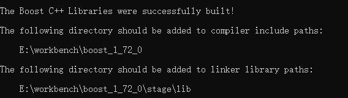
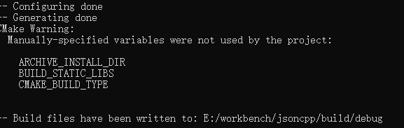

Preface
今天已经改一篇，发一篇了，现在是准备第三篇。
上一篇笔记里面测试的时候发现 rocketmq-python 无法在 Windows 上使用，最后是在 vmware 里的 centos 上运行的测试用例。
这一篇是调查 Windows 使用 golang 连接 rocketmq 的笔记。
Content
按照官方文档，这个包是 rocketmq-client-cpp 的一个轻量级的封装，所以需要先从 librocketmq 开始。
下载 rocketmq-client-cpp 源代码
1 | git clone https://github.com/apache/rocketmq-client-cpp.git |
按照文档上Windows上编译的部分，需要编译工具如下：
- vsd2015:libevent,jsoncpp,zlib,boost,rocket-client
- git
又来到了 boost 了，之前本机没装成功过，加之我电脑上装的软件基本都是社区版，vs装的是2017社区版，版本有出入。
算了，走一步是一步吧，windows挺麻烦的，对于某些类型的开发来说。
所幸官方提供了一个脚本用于下载和安装这些插件： win32_build.bat编译 boost
第一次编译
编译 boost 的时候，找不到 cl ，找到 vs2017 安装目录下的 cl 对应路径，将此路径方到 PATH 中，重编。
第二次编译
fatal error C1034: ctype.h: 不包括路径集 compile.c
1 | @if "%programfiles%"=="" ("set programfiles=E:\Program Files (x86)") |
读了一下 win32_build.bat*，发现 *vs 路径以及对应的 vsvars32.bat 路径都错了，当然，也包括版本，这也是第一次编译的时候 cl 找不到的根因，因为 cl 编译前需要主动调用一下这个文件。
修正一下 vs 的安装路径，以及在 vs2017 中 vsvars32.bat 中正确的名字，接着编。
第三次编译
2019/12/18 编译
按下 win 按钮，键入 cmd ，找到 vs2017的x86_x64交叉工具命令提示符，定位到 rocketmq-client-cpp 的 thirdparty/boost_1_58_0 ,重新编译的时候才会清理这里。
在其中输入：
1 | bootstrap.bat |
此时查看 bootstrap.log 会发现编译成功了，打开 project-config.jam，将内容改为如下：
1 | import option ; |
也就是添加我的 vs2017 的 cl 路径。
继续在命令行中输入：
1 | b2 toolset=msvc-14.0 address-model=64 |
回车之后需要等待一段时间了，感觉这次编译是不会报错了。
Unknown compiler version - please run the configure tests and report the results
马蛋，编译器版本对不上。
第四次编译
2019/12/20 编译
下载最新版本的 boost 1.72.0 ，进入这个目录下。
根据 rocketmq-client-cpp 里面的 win32_build.bat 的 :build64 --build all project 部分一步一步编译。
1
2set ZLIB_SOURCE="E:\workbench\rocketmq-client-cpp\thirdparty\zlib-1.2.3-src\src\zlib\1.2.3\zlib-1.2.3"
set ZLIB_INCLUDE="E:\workbench\rocketmq-client-cpp\thirdparty\zlib-1.2.3-src\src\zlib\1.2.3\zlib-1.2.3"
调用当前目录下的 bootstrap.bat ,成功后调用：
1 | b2 -j8 --with-serialization --with-atomic --with-log --with-locale --with-iostreams --with-system --with-regex --with-thread --with-date_time --with-chrono --with-filesystem --build-type=complete address-model=64 |
编译64bit的boost，漫长的等待后，总算成功了。

编译jsoncpp
接着编译 jsoncpp,
1 | cd jsoncpp-0.10.6 |
error MSB8020: 无法找到 v140 的生成工具(平台工具集 =“v140”)。若要使用 v140 生成工具进行生成，请安装 v140 生 成工具。或者，可以升级到当前 Visual Studio 工具，方式是通过选择“项目”菜单或右键单击该解决方案，然后选择“重定解决方案目标”
阿西吧！！！
rocketmq-client-cpp 使用的 jsoncpp 版本是 0.10.6 , 支持的 cpp 版本比较老，用 vs2017 去强行升级和编译会有奇怪的问题。
索性下载个新版来编译好了。
1 | git clone https://github.com/open-source-parsers/jsoncpp.git |
切换到最新的稳定版本 1.9.2。
下载和安装好 cmake x64。
启动 vs2017 x86_64交叉编译环境 ，进入到 jsoncpp 目录，
1 | mkdir -p build/debug |
编译成功会出现如下画面：

此时，build/debug 下面已经填满了。
打开 JSONCPP 解决方案，全部生成会有一部分报错，管他呢，我只需要生成 jsoncpp_lib 就可以了。
编译libevent
下载最新的 libevent ，切换到最新的稳定版本 release-2.1.11-stable。
1 | mkdir build && cd build |
apache/rocketmq-client-go
这个是 apache 官方提供的 rocketmq-client-go，纯 golang 目前只发布了 alpha 版本；
但是文档里面写着 Alibaba 对他进行了一些调整，在集团内部使用超过了3年以上，所以他的撸棒性也因此得到了验证。
这个客户端是通过 cgo 来调用 rocketmq-client-cpp 的。
Finally 2019/12/27
最后切换到 rocketmq-client-go native 版本完事，不折腾了。
现在用这个没有别的问题，就是 rocketmq 搭建在 docker+centos 上，
而 host 连接到 nameserver 的时候，连不到 broker ，
因为 broker 的 ip docker的 ip，而不是 centos 的 ip 。
妈蛋，散了。